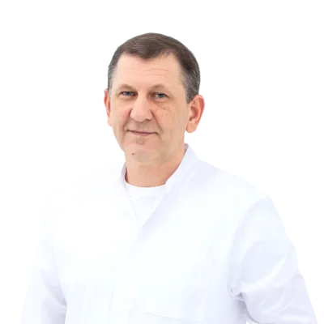
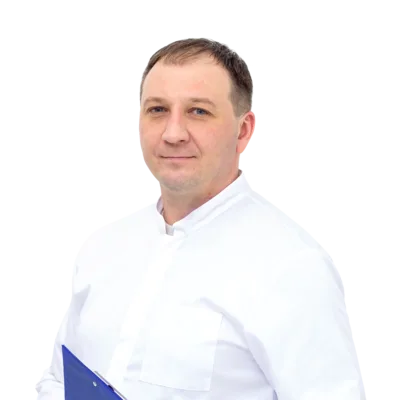

Показання та протипоказання
Коли підходить лапароскопія
Лапароскопія показана при:
- Вузли в стінці матки (інтрамуральні) розміром 3–12 см
- Вузли зовні матки (субсерозні) будь-якого розміру
- Планування вагітності в майбутньому
- Множинні вузли — до 5–6 за одну операцію
- Тиск вузла на сечовий міхур або кишечник
- Рясні місячні з анемією при бажанні зберегти матку
Коли лапароскопія не підходить:
- Вузли в порожнині матки (субмукозні) — для них гістероскопія без розрізів
- Вузли більше 14–15 см — розглядається відкрита операція
- Більше 10 вузлів при дифузному ураженні стінки матки
- Протипоказання до загальної анестезії — визначає анестезіолог
- Підозра на злоякісне новоутворення — інша тактика
Маршрут пацієнта
Від першого прийому до виписки
Консультація гінеколога
Лікар оцінює результати УЗД, визначає розташування, розмір і кількість вузлів. За необхідності — направлення на МРТ для точного планування. Видає перелік аналізів.
Передопераційна підготовка
Аналізи крові (загальний, біохімічний, коагулограма, група та резус, ВІЛ/гепатит Б/сифіліс), мазок на флору, ПАП-тест, ЕКГ, УЗД органів малого таза.
День операції
Госпіталізація вранці. Загальна анестезія — пацієнтка спить і нічого не відчуває. Три проколи по 0,5–1 см на животі. Хірург вводить лапароскоп Karl Storz з камерою Full HD та інструменти, відсікає вузли від стінки матки і ушиває дефект ендоскопічним швом. Матка зберігається повністю.
Стаціонар
Перший день — відпочинок у палаті під наглядом лікаря, знеболення за потреби. Другий день — пацієнтка встає і ходить. Виписка на 2–3 день з рекомендаціями. Шви розсмоктуються самостійно, знімати не потрібно.
Контроль та відновлення
Контрольний огляд та УЗД через 2 тижні. Звичайна активність — через 2–3 тижні. Планування вагітності — не раніше ніж через 6–12 місяців.
Метод детально
Як виконується операція
Лапароскопічна міомектомія — органозберігаюча операція. Хірург виконує три проколи на передній стінці живота діаметром 0,5–1 см. Через них вводяться лапароскоп Karl Storz IMAGE1 S з камерою Full HD та хірургічні інструменти. Хірург бачить операційне поле на моніторі 27" Full HD в реальному часі.
Вузли відсікаються від стінки матки системою гармонік (Harmonic Scalpel — ультразвуковий скальпель), що забезпечує мінімальну крововтрату. Дефект у стінці матки ушивається ендоскопічним швом. Матка зберігається повністю.
За одну операцію можна видалити кілька вузлів. Видалена тканина направляється на гістологічне дослідження.
Обладнання
Технічне забезпечення операцій
Karl Storz IMAGE1 S H3-Z
Камера Full HD для точної візуалізації операційного поля. Монітор 27" Full HD.
Harmonic Scalpel
Ультразвуковий скальпель для безкровного відсікання тканин без опіку навколишніх структур.
Lapomed — морцелятор
Ендоскопічна система для витягнення видаленого вузла через мікропроколи без розширення доступу.
Drager Primus
Наркозно-дихальний апарат. Моніторинг і підтримка загальної анестезії протягом усієї операції.
Хірурги
Хто виконує операцію

Афанасьєв Ігор Володимирович
Акушер-гінеколог · Оперуючий гінеколог

Стрюков Дмитро Владиславович
Акушер-гінеколог · Оперуючий гінеколог
Відновлення
Таймлайн після операції
1–2
Стаціонар
- Відпочинок у палаті, спостереження лікаря
- Знеболення за потреби
- Вставати і ходити — з другого дня
- Легке харчування
1–2
Вдома
- Повільні прогулянки без обмежень
- Не піднімати більше 3 кг
- Контрольний огляд на 14 день
3–4
Повернення до роботи
- Офісна робота — з 2–3 тижня
- Легка фізична активність
2–6
Повна реабілітація
- Спорт і плавання — від 4–6 тижнів
- Рубець на матці формується протягом 6–12 місяців
- Планування вагітності — через 6–12 місяців після підтвердження рубця на УЗД
Часті питання
Що запитують пацієнтки
Альтернативні методи
Інші варіанти лікування
Гістероскопічне видалення
Підходить якщо вузол розташований в порожнині матки. Без розрізів, через шийку матки, виписка за 1 день.
Лапароскопічна гістеректомія
Якщо вузлів багато або матку зберегти неможливо. Видалення матки лапароскопічним методом.
Автор: Ігор Растрепін, засновник check-up.in.ua · Рецензент: Афанасьєв Ігор Володимирович, оперуючий гінеколог, к.м.н., вища категорія, 33 роки досвіду · Оновлено: квітень 2026 · Джерела: Mayo Clinic Family Health Book, 5th Edition; Стандарти медичної допомоги: Лейоміома матки, МОЗ України, 2023